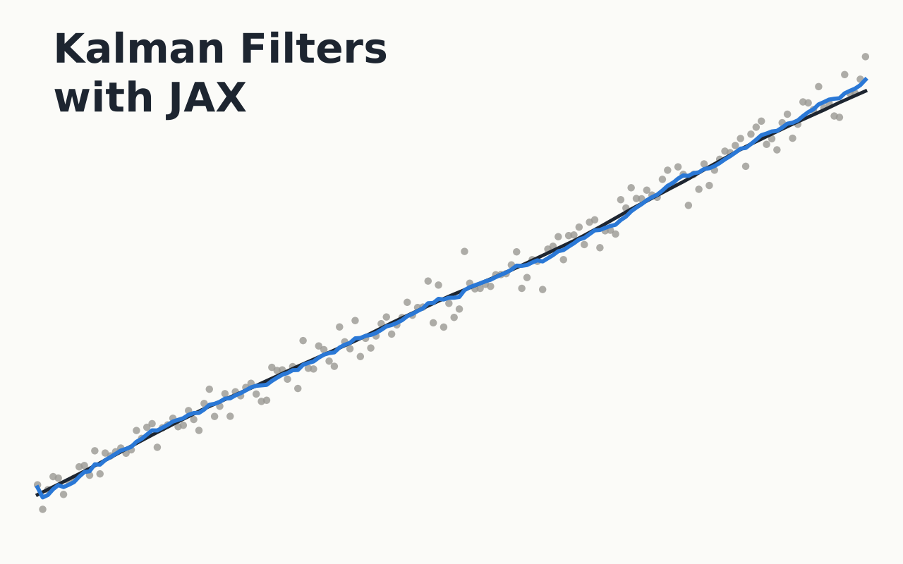

The Kalman filter is sixty years old and still the working engineer's way of turning noisy measurements into a state and an honest uncertainty. This course gathers four of the author's small public repositories on filtering into one sequence: a first filter in twenty lines of NumPy on a simulated vehicle, the filter and its nonlinear cousins in JAX, a neural network learning the dynamics the model leaves out from inside the filter, the same learned forecaster facing a year of real air-quality data, and finally the simplest filter of all written in C, for the day it has to run on a sensor. Every demo runs in your browser from the same equations as the original code, every printed number was reproduced, and the bugs that turned up, a filter that silently returns NaN in 32-bit arithmetic and a C program that wrote a file of zeros among them, are explained and fixed.

The sequence follows the author's repositories in order of ambition. kalman_vehicle_tracking is
a twenty-line NumPy class applied to a simulated chirp; it improves on the sensor by 10% and gets worse than the
sensor near the end, which is the right first lesson about models. Kalman-Filter-with-JAX has
three scripts: a comparison of the linear, extended and unscented filters, where the third turns to NaN after
33 seconds for a reason worth a whole section; a tanh network inside the filter's prediction step, trained by
differentiating through the entire recursion, which the page redoes by hand in the browser to the seventh
digit; and a next-hour nitrogen-dioxide forecaster on the UCI air-quality sensors, measured against persistence.
First-Order-Filter-using-C is a coursework program whose committed output file is all zeros;
compiling it finds out why, and reading it is a compact C lesson.
Nothing here is taken on trust. Every number quoted on a chapter page was recomputed from the repository's code and again from the page's own implementation, and where the two disagree the page says which one is wrong. The course is also a worked example of how to read an experiment critically: which loss is being minimised, what the model is evaluated on, whether the baseline is the right one, and whether the test could have failed.
Chapter 01 needs only Python. Chapter 02 is the reference for the rest and is self-contained. Chapter 03 needs its filter and some comfort with neural networks and calculus; chapter 04 needs 03 and a little scepticism. Chapter 05 needs chapter 01 and any programming language, and teaches the C it uses.
The chapter pages run everything in the browser. To run the original code, download
the code: the kalman_jax package with its three scripts and tests, the vehicle tracker in
vehicle/, and the C program with its corrected version in first-order-c/. Or clone the
repositories: kalman_vehicle_tracking,
Kalman-Filter-with-JAX and
First-Order-Filter-using-C. Then:
pip install -r requirements.txt
python vehicle/tracker/vehicle_tracker.py # chapter 01 (run from vehicle/)
python "Kalman Filter with JAX.py" # chapter 02: linear KF, EKF, UKF
python "Kalman Filter with DL.py" # chapter 03: the learned residual
pytest
gcc -Wall -Wextra -o td3 first-order-c/TD3_fixed.c && (cd first-order-c && ../td3) # chapter 05Chapter 04 needs the UCI Air Quality dataset: download AirQualityUCI.csv from the
UCI Machine Learning Repository (CC BY 4.0) into
data/raw/, then run python "Air Quality with JAX.py". The synthetic scripts run in
seconds on a CPU; the air-quality training takes about a minute; the C program compiles and runs instantly.
Chapters 01 to 03 use simulated data from known models, so every estimate can be checked against ground truth. Chapter 04 uses the Air Quality dataset of De Vito and colleagues (UCI Machine Learning Repository), 9358 hourly readings of five metal-oxide sensors, temperature and humidity from a polluted Italian street, with reference analyser concentrations as targets. Chapter 05 uses the recording that ships with the C program. The corrections the course proposes to the repositories, a numerically safe default for the unscented filter, a failing test fixture, fresh-rollout and baseline evaluations for the learned models, a consistent vehicle simulator, and the C program's three bugs, are documented on the chapter pages.